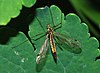

tipulidae

Has synonym(s): crane fly
Definition: Crane fly is a common name referring to any member of the insect family Tipulidae. Cylindrotominae, Limoniinae, and Pediciinae have been ranked as subfamilies of Tipulidae by most authors, though occasionally elevated to family rank. In the most recent classifications, only Pediciidae is now ranked as a separate family, due to considerations of paraphyly. In colloquial speech, crane flies are known as mosquito hawks or "skeeter-eaters", though they do not actually prey on adult mosquitos or other insects. They are also sometimes called "daddy longlegs", a name which is also used for arachnids of the family Pholcidae (also called "cellar spiders") and the order Opiliones (also called "harvester spiders"). The larvae of crane flies are known commonly as leatherjackets.Crown group crane flies have existed since at least the Barremian stage of the Early Cretaceous and are found worldwide, though individual species usually have limited ranges. They are most diverse in the tropics but are also common in northern latitudes and high elevations.Tipulidae is one of the largest groups of flies, including over 15,000 species and subspecies in 525 genera and subgenera. Most crane flies were described by the entomologist Charles Paul Alexander, a fly specialist, in over 1000 research publications.
Source: Wikipedia
Wikipedia Page (Something wrong with this association? Let us know.)
Wikidata Page (Something wrong with this association? Let us know.)